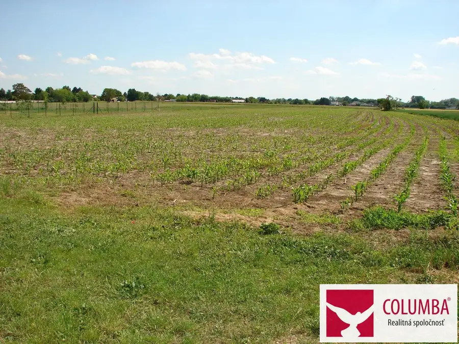
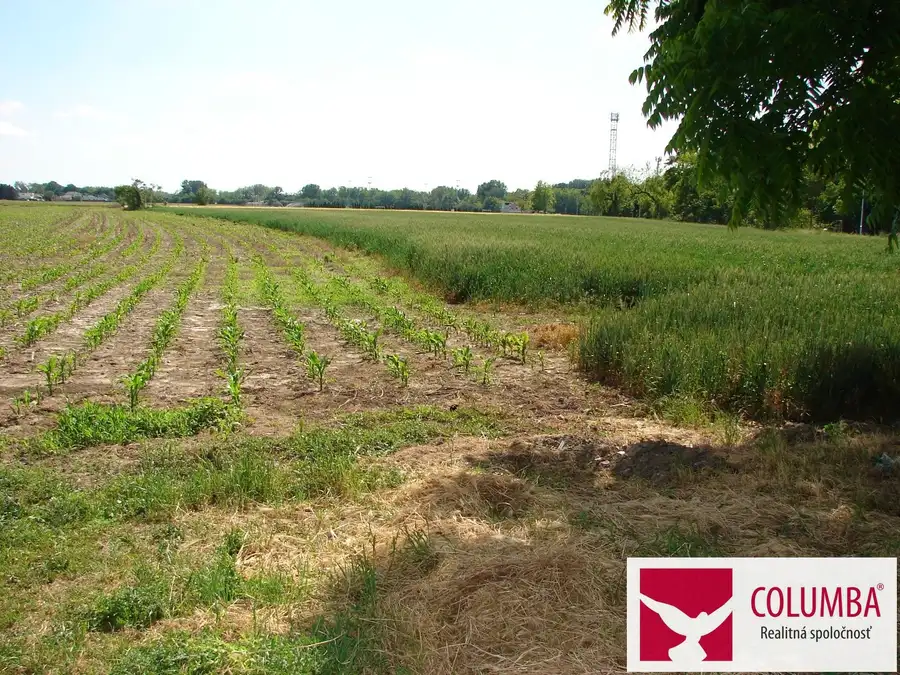
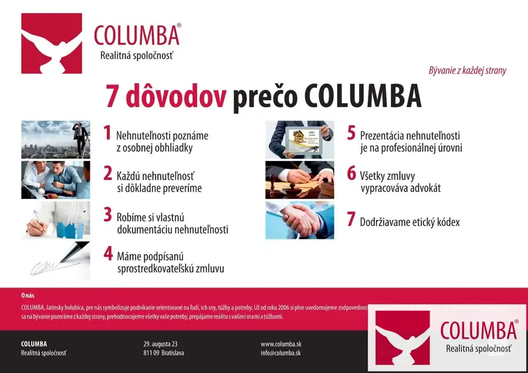

Na predaj stavebný pozemok v Zálesí okres Senec
Zálesie



- Plocha2039 m²
- VlastníctvoOsobné
O nehnuteľnosti
V ponuke realitnej kancelárie COLUMBA Central nájdete na predaj tento pozemok, ktorý sa nachádza v tichom prostredí ulice Ku gaštanu v obci Zálesie v okrese Senec.Podľa listu vlastníctva je umiestnený mimo zastavaného územia obce (extravilán) a je zapísaný v registri "C" ako orná pôda. Je umiestnený na konci ulice a má tvar obdĺžnika so šírkou 41,4 m a dĺžkou 49,3 m. V súčasnosti je časť prenajatá spoločnosti AGRO MALINOVO a.s. s vyplácaním podielu na zisku.Vlastníctvo: osobnéVýmera pozemku: 2039 m2 (možnosť predaja aj polovice) Druh: orná pôdaPozemok: rovinatýPrístupová cesta: betónováInžinierske siete: pri pozemkuNa základe UPI je z hľadiska funkčného využitia pozemok zaradený medzi obytné územie so zástavbou s rodinnými domami.Regulácia intenzity využitia pozemku:- maximálny index zastavanej plochy 0,30- minimálny index zelene 0,60- podlažnosť 2 vrátane podkrovia- minimálna výmera pozemku RD 600 m2Cena: 530 140 €Pomáhajte: Kúpou tejto nehnuteľnosti prostredníctvom našej realitnej kancelárie zároveň pomôžete spoločnosti priateľov detí z detských domovov Úsmev ako dar postupne napĺňať ich hlavné motto ...aby každé dieťa malo rodinu.V prípade záujmu o kúpu tejto nehnuteľnosti alebo len o ďalšie informácie, ktoré ste sa tu nedozvedeli kontaktujte: Vojtech Bátora, e-mail: batora@columba.sk, tel.: 0911 149 921.Prečo kupovať nehnuteľnosť prostredníctvom realitnej kancelárie COLUMBA Central?Neplatíte žiadne poplatky spojené s predajom a prevodom nehnuteľnosti. Okrem bezplatného právneho servisu, spracovania kúpnych zmlúv, spracovania návrhu na vklad do katastra, hradíme poplatok za podanie návrhu na vklad kúpnych zmlúv do katastra, správny poplatok za výpis z listu vlastníctva a poplatok za overenie podpisov predávajúcich na kúpnych zmluvách. Kompletný servis s prevodom nehnuteľnosti máte vyriešený pohodlne a hlavne bezpečne.
Parametre
- Druh
- Pozemok pre rodinné domy
- Dátum zverejnenia
- 07. 06. 2025
- Dĺžka pozemku
- 49.3
- Elektrina
- Pri pozemku - 400 V
- Funkčné využitie
- Výstavba rodinného domu
- Odpadové vody
- Nedostupné
- Plocha pozemku
- 2039 m²
- Plyn
- Pri pozemku
- Pripravenosť k výstavbe
- Schválené v územnom pláne
- Prístupová komunikácia
- Betónová
- Terén pozemku
- Rovinatý
- Typ
- Predaj
- Vlastníctvo
- Osobné
- Voda
- Pri pozemku - Verejný vodovod
- Voľnočasové aktivity
- Turistika, Cykloturistika
- Územie
- Extravilán
- Šírka pozemku
- 41.4